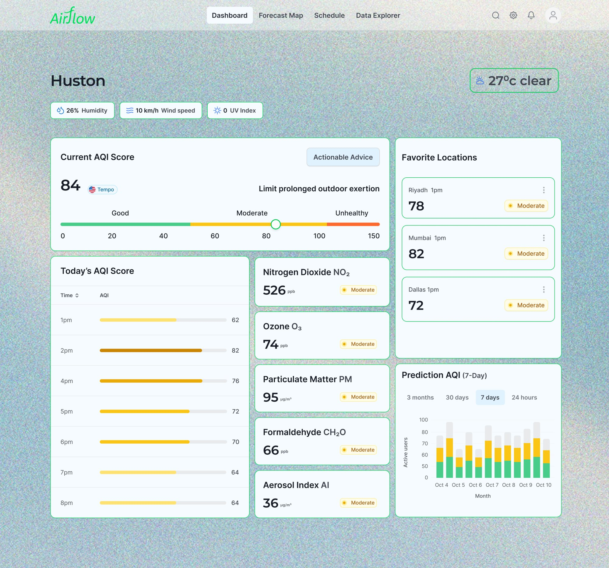
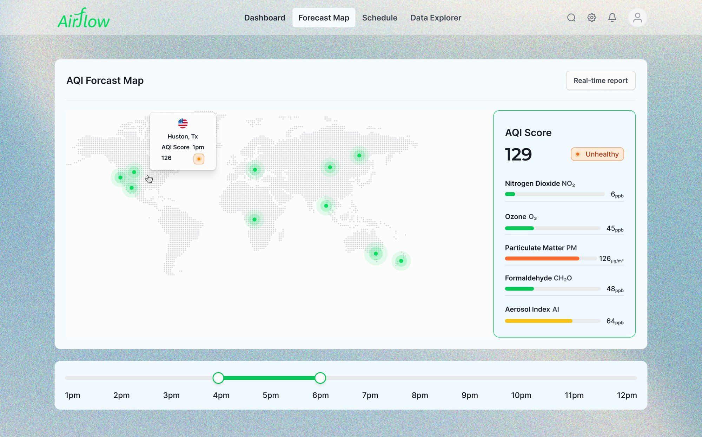

Airflow: air quality you can plan your day around
A predictive web app that turns NASA TEMPO satellite data into plain-language guidance, so a parent can check whether it is safe for a child with asthma to play outside this afternoon.
Product Designer & Design System Lead
NASA International Space Apps Challenge, TEMPO data visualization
48-hour hackathon sprint, 2025
Global Nominee
Deliverables
Information architecture, design system tokens, UI wireframes and interactive prototypes.

01 · The problem
Air quality data tells you what the air was, not what it will be.
- Coarse in time: traditional satellites pass once a day, missing morning and evening rush-hour peaks.
- Sparse on the ground: stationary monitors have blind spots between industrial corridors and suburbs.
- Too technical: science portals show raw parts-per-billion values with no guidance on what to do.
Insight: ground-level ozone spikes on hot afternoons, which a static daily maximum hides. People do not need more data. They need to know when and where it is safe to be outside in the next 2 to 6 hours.
02 · Users
Three people, one question: is it safe to be outside?
| Persona | Who | Needs | Friction today |
|---|---|---|---|
| Sarah Chen | Health-conscious parent | Plain-language answer on whether her asthmatic daughter can attend afternoon sports | Technical charts; cannot connect ppb numbers to health risk |
| Marcus Jackson | Outdoor athlete | Hourly predictions and route-level pollution to schedule cardio | Apps show daily averages, so he runs into smog he cannot see |
| Dr. Elena Rodriguez | Public health official | Validated multi-pollutant breakdowns (NO₂, O₃, PM2.5) and exportable data layers | No single view joining satellite, ground stations and wind |
03 · Architecture
Three data sources in, three levels of detail out.
NASA TEMPO (hourly), EPA and PurpleAir ground sensors, and weather models feed a data fusion and validation step. The interface then splits into three tiers, from quick answer to deep analysis.
Design system decisions
- Type: a clean neo-grotesque hierarchy, with monospaced readouts for pollutant values so numbers stay stable as they update.
- A 0 to 150 gauge, not 0 to 500: the primary gauge covers only the actionable range, so everyday changes are visible instead of squashed against an extreme scale.
04 · Key interfaces
Advice first, data second.
The action-first dashboard
- Validated metric card: the fused AQI reading with a TEMPO verification badge, to build trust.
- Plain-language guidance: an Actionable Advice container (for example, "Limit prolonged outdoor exertion") replaces generic "Air quality is..." status cards.
- Pollutant micro-cards: NO₂, O₃, PM, CH₂O and aerosol index, each with a colour-coded status pill, so the page scans quickly and still goes deep.

The predictive time-travel map
- Plume rendering: layered, semi-transparent heat maps show continuous dispersion instead of isolated pins.
- Time scrubbing: a 24-hour slider lets people watch predicted plumes move along highways and industrial zones.
- Layer toggles: isolate one pollutant, such as ozone in a heat wave, or overlay wind direction.
05 · Constraints
When the live feed fails, the interface says so.
During prototyping, the raw TEMPO processing pipeline had latency, so a continuous hourly stream could not be rendered inside the sprint. Instead of hiding the gap, I designed a fallback state.
Why it matters: showing the lapse ("Ground Data Active") keeps trust intact during an upstream outage. Error states are part of the product, not an afterthought.
06 · The journey
Sarah's afternoon decision.
07 · Measuring success
Four measures set for after launch.
| Measure | What it shows | Target |
|---|---|---|
| Task completion speed | Time from launch to reading the advice | Under 4 seconds |
| Predictive engagement | Sessions using the slider to look 2+ hours ahead | Over 60% |
| Action rate | Users changing or rescheduling plans after a high-risk forecast | Tracked |
| Model validation | Match between predicted plumes and later ground readings | Tracked |
These are launch targets, not measured results.
08 · Outcome
Selected as a Global Nominee.
- Recognised in the NASA International Space Apps Challenge for its system architecture, technical integration and public health impact.
- Designing with complex data needs a strict visual hierarchy and aggressive cognitive offloading.
- Error states are core design: a fallback for an unstable feed matters as much as the ideal-state dashboard.
Next case study
Tasheel Post Design System →